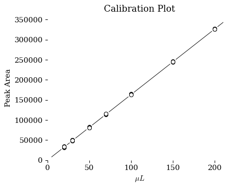

import pandas as pd
import numpy as np
import matplotlib.pyplot as plt
import scipy.stats as stats
from scipy.stats import linregress
from scipy.optimize import curve_fit
############################
### Set global variables
############################
data_path = "https://raw.githubusercontent.com/blinkletter/3530Biochem/main/Permethrin/"
image_path = "https://raw.githubusercontent.com/blinkletter/3530Biochem/main/Permethrin/images/"
github_data_location = "https://raw.githubusercontent.com/blinkletter/LFER-QSAR/main/data/"
github_styles_location = "https://raw.githubusercontent.com/blinkletter/LFER-QSAR/main/styles/"
################################################################################
### Read data set. The fields are separated by commas; comments are enabled
################################################################################
df = pd.read_csv(data_path + "PM-Calibration2.csv",
delimiter = ",",
skipinitialspace=True,
index_col="Vol (/uL)",
comment = "#")
print(df)
Area-1 Area-2 Area-3 Area-4 Area-5 Area-6
Vol (/uL)
20 31553 31991 33784 34178 33671 33830
30 47717 50298 48470 50185 50026 49075
50 81206 83212 80860 82135 82250 80709
70 115975 113347 114418 114965 114318 115340
100 164874 163760 163519 164033 164139 163175
150 245118 244527 245653 246896 245577 245320
200 327267 326758 327735 326328 327121 326311
################################################################################
### Create and x,y data set that combines all the data
################################################################################
column_names = df.columns
x = []; y = []
for n in column_names:
x_temp = np.array(df.index)
y_temp = np.array(df[n])
x = np.append(x, x_temp)
y = np.append(y, y_temp)
#print(x, y)
################################################################################
### Linear curve fit on the collected x,y data
################################################################################
def linear(x, slope, intercept):
return slope * x + intercept
def linear0(x, slope):
return slope * x
param,pcov = curve_fit(linear,x,y)
perr = np.sqrt(np.diag(pcov))
print(param)
print(pcov)
print(perr)
### Use with 'linear' curve fit
#slope, intercept = param
#slope_stdev, intercept_stdev = perr
#print(f"Line is y = ({slope:0.2f} +/- {slope_stdev:0.2f})x + ({intercept:0.2f} +/- {intercept_stdev:0.2f})")
### Use with 'linear0' curve fit
slope = param[0]
slope_stdev = perr[0]
print(f"Line is y = ({slope:0.2f} +/- {slope_stdev:0.2f})x")
[1633.53046272 354.53993668]
[[ 4.44931817e+00 -3.94082729e+02]
[-3.94082729e+02 5.16119730e+04]]
[ 2.1093407 227.18268635]
Line is y = (1633.53 +/- 2.11)x
##################################################
### Setup a figure with two plots side-by-side ###
### and choose a stylesheet ###
##################################################
plt.style.use(github_styles_location + "tufte.mplstyle")
#plt.style.use(github_styles_location + "S2_classic2.mplstyle")
fig, ax = plt.subplots(nrows=1, ncols=1, figsize=(5,4))
########################
### Plot the data ###
########################
ax.scatter(x,y, marker = "o", color = "white", s = 96, edgecolors = "none", linewidths=0.7, zorder = 2)
ax.scatter(x,y, marker = "o", color = "white", s = 32, edgecolors = "black", linewidths=0.7, zorder = 2)
last_x = np.array(df.index)[-1]
x_axis = np.linspace([5., last_x*1.05], 100)
ax.plot(x_axis, x_axis * slope, "-", color = "black", linewidth=0.7, zorder = 1)
############################
### Set labels and scale ###
############################
ax.set(title = "Calibration Plot",
ylabel=r"Peak Area",
xlabel=r"$\mu L $",
xlim=0,
ylim=0
)
#ax.margins(x=.07, y=.07, tight=True) # add 7% empty space around outside of plot area
#############################
### Output the final plot ###
#############################
fig.savefig("plot2.pdf") # use this to save the figure in PDF format
plt.show() # output the combined plot plots

import pandas as pd
import numpy as np
import matplotlib.pyplot as plt
import scipy.stats as stats
from scipy.stats import linregress
from scipy.optimize import curve_fit
############################
### Set global variables
############################
data_path = "https://raw.githubusercontent.com/blinkletter/3530Biochem/main/Permethrin/"
image_path = "https://raw.githubusercontent.com/blinkletter/3530Biochem/main/Permethrin/images/"
github_data_location = "https://raw.githubusercontent.com/blinkletter/LFER-QSAR/main/data/"
github_styles_location = "https://raw.githubusercontent.com/blinkletter/LFER-QSAR/main/styles/"
################################################################################
### Read data set. The fields are separated by commas; comments are enabled
################################################################################
df = pd.read_csv(data_path + "PM-Calibration2.csv",
delimiter = ",",
skipinitialspace=True,
index_col="Vol (/uL)",
comment = "#")
means = df.mean(axis=1)
stdevs = df.std(axis=1)
df["mean"] = means
df["stdev"] = stdevs
display(df)
| Area-1 | Area-2 | Area-3 | Area-4 | Area-5 | Area-6 | mean | stdev | |
|---|---|---|---|---|---|---|---|---|
| Vol (/uL) | ||||||||
| 20 | 31553 | 31991 | 33784 | 34178 | 33671 | 33830 | 33167.833333 | 1103.119471 |
| 30 | 47717 | 50298 | 48470 | 50185 | 50026 | 49075 | 49295.166667 | 1053.715221 |
| 50 | 81206 | 83212 | 80860 | 82135 | 82250 | 80709 | 81728.666667 | 970.016014 |
| 70 | 115975 | 113347 | 114418 | 114965 | 114318 | 115340 | 114727.166667 | 911.820030 |
| 100 | 164874 | 163760 | 163519 | 164033 | 164139 | 163175 | 163916.666667 | 585.184643 |
| 150 | 245118 | 244527 | 245653 | 246896 | 245577 | 245320 | 245515.166667 | 787.632761 |
| 200 | 327267 | 326758 | 327735 | 326328 | 327121 | 326311 | 326920.000000 | 560.825106 |
x = df.index
y = df["mean"]
stdev = df["stdev"]
################################################################################
### Linear curve fit on the collected x,y data
################################################################################
def linear(x, slope, intercept):
return slope * x + intercept
def linear0(x, slope):
return slope * x
param,pcov = curve_fit(linear,x,y, sigma = stdev, absolute_sigma=True)
perr = np.sqrt(np.diag(pcov))
print(param)
print(pcov)
print(perr)
### Use with 'linear' curve fit
#slope, intercept = param
#slope_stdev, intercept_stdev = perr
#print(f"Line is y = ({slope:0.2f} +/- {slope_stdev:0.2f})x + ({intercept:0.2f} +/- {intercept_stdev:0.2f})")
### Use with 'linear0' curve fit
slope = param[0]
slope_stdev = perr[0]
print(f"Line is y = ({slope:0.2f} +/- {slope_stdev:0.2f})x")
[1632.9607675 432.47372683]
[[ 2.15284980e+01 -2.48504295e+03]
[-2.48504295e+03 3.72322898e+05]]
[ 4.63988125 610.18267554]
Line is y = (1632.96 +/- 4.64)x
##################################################
### Setup a figure with two plots side-by-side ###
### and choose a stylesheet ###
##################################################
plt.style.use(github_styles_location + "tufte.mplstyle")
#plt.style.use(github_styles_location + "S2_classic2.mplstyle")
fig, ax = plt.subplots(nrows=1, ncols=1, figsize=(5,4))
########################
### Plot the data ###
########################
ax.scatter(x,y, marker = "o", color = "white", s = 96, edgecolors = "none", linewidths=0.7, zorder = 1)
ax.scatter(x,y, marker = "o", color = "white", s = 32, edgecolors = "black", linewidths=0.7, zorder = 3)
ax.errorbar(x, y, # data
yerr=2 * stdev, # y errors
xerr=None, # x errors
fmt='None', # Data marker style
ecolor="black", # Color of error bars
elinewidth=0.7, # Thickness of vertical bar
capsize=5, # width of cap (in points)
capthick=0.5, # thickness of cap line
zorder = 2)
last_x = np.array(df.index)[-1]
x_axis = np.linspace([5., last_x*1.05], 100)
ax.plot(x_axis, x_axis * slope, "-", color = "black", linewidth=0.7, zorder = 0)
############################
### Set labels and scale ###
############################
ax.set(title = "Calibration Plot",
ylabel=r"Peak Area",
xlabel=r"$\mu L $",
xlim=0,
ylim=0
)
#ax.margins(x=.07, y=.07, tight=True) # add 7% empty space around outside of plot area
#############################
### Output the final plot ###
#############################
fig.savefig("plot.pdf") # use this to save the figure in PDF format
plt.show() # output the combined plot plots